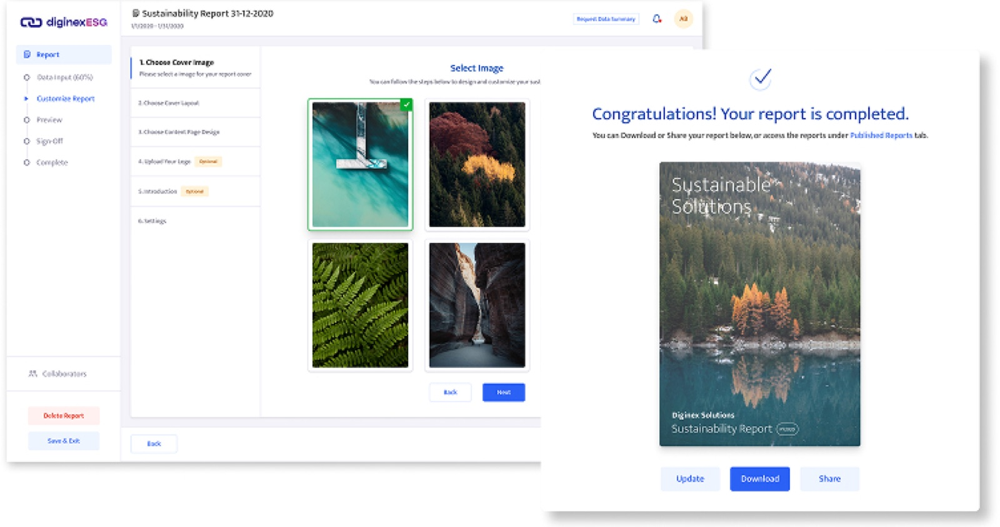
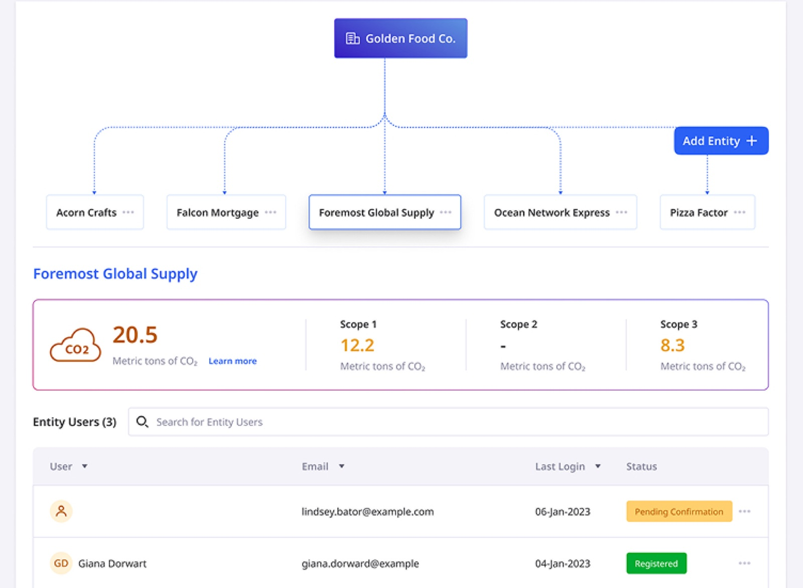
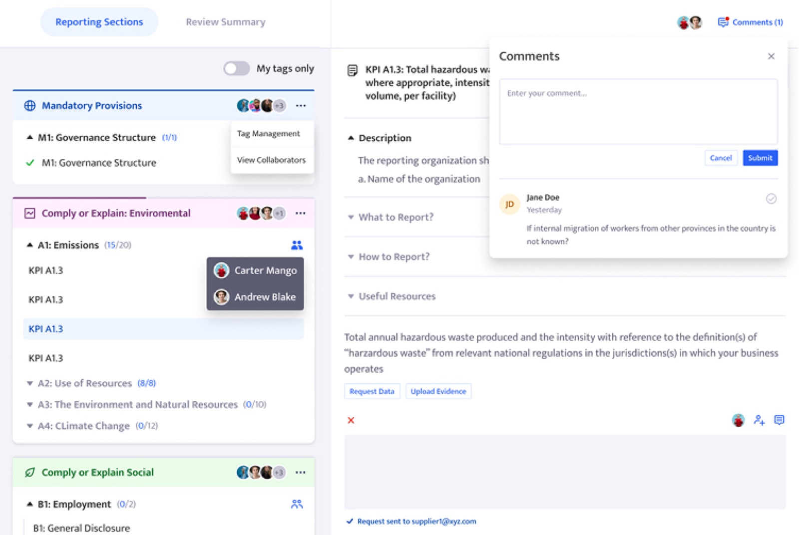

ESG and sustainability reporting platform for enterprise teams, built for Diginex.
View the initial portfolio version
The business problem
Diginex had proven the market with a first-generation ESG reporting product, but the reality of how enterprise sustainability reporting actually works had outgrown the platform. A single ESG report isn't filled in by one person, it's assembled by dozens of contributors across multiple business units, reviewed by managers, signed off by leadership, and audited externally.
The design problem
Building the next version of DiginexESG meant solving two things at once.
- ESG reporting is a multi-stakeholder workflow, different KPIs are owned by different people, often across different subsidiaries, with deadlines, approvals, and audit trails between them.
- Large companies don't report as one entity, they report as a parent organisation with many subsidiaries, each with its own emissions, users, and reports.
Approach
I joined as the second-generation designer, working closely with a product manager and collaborating with other teams across the same product branch to translate evolving enterprise requirements into product features. Development was incremental, with each feature validated through feedback from real ESG users. In parallel, the design system was rebuilt to support the broader Diginex ecosystem, allowing ESG patterns to scale across other sustainability products.
Key design decisions
A multinational doesn't report as a single entity, it reports as a parent organisation with subsidiaries, each with its own emissions, users, and disclosures. The decision was to make Entity Management a first-class surface, not a settings page. Users build their corporate structure as a navigable hierarchy.

ESG reports aren't filled in by one person. Dozens of contributors own different KPIs, managers review, leadership signs off. The first version treated all of this as "share access." The decision was to design collaboration as a structured workflow, KPIs assigned to specific people, progress tracked per contributor, data and evidence requests routed to the right owner. The Report Collaborators view stopped being a permissions screen and became the operating layer of the platform: who is doing what, where they are, and what's still waiting.

Outcomes
Designed a platform that supports how enterprise ESG reporting actually works, multi-stakeholder, multi-entity, audit-relevant, making single-user platform assumptions obsolete.
Shipped the revamp as a second-generation designer working with one product manager, validated against real ESG users at each stage of delivery.